Debugging Broken Accessibility
This talk is not about:
- how to test
- how to fix specific bugs
- tooltips
Why debugging?
We have an ARIA problem
It doesn't stop there...
<div role="tablist" aria-hidden="false">
<button role="tab"
aria-selected="true"
aria-label="View slide 1-Save $150 on Surface Laptop Go"
title="Slide 1"
aria-setsize="2"
aria-posinset="1"
tabindex="0"></button>
<button role="tab" aria-label="View slide 2-Save big on select Xbox and PC games" title="Slide 2" aria-setsize="2" aria-posinset="2" aria-selected="false" tabindex="-1"></button>
</div>
So why did this happen?
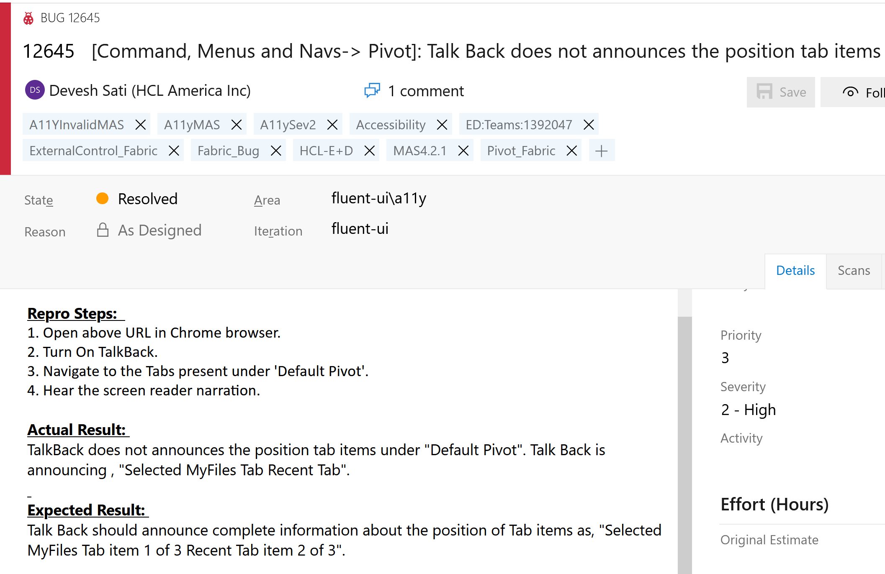
Second case study:
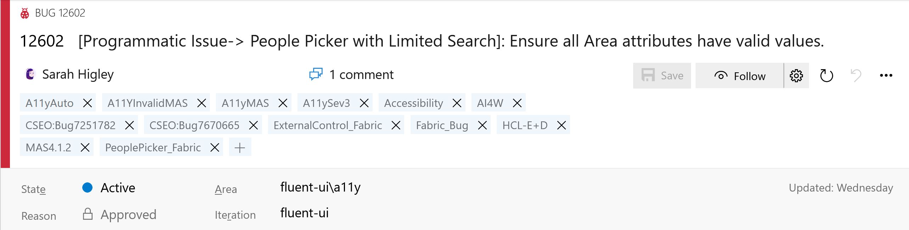
Talk about why the filed bug is BS, but there's a real usability improvement that can be made.
link: 12602
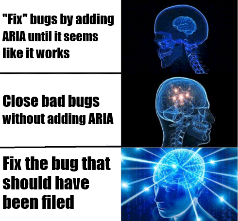
Our Toolbox:
- Inspect
- AI4Win
- Assistive Tech
- Specs
- Github issues
Bug 1: the dreaded <table>
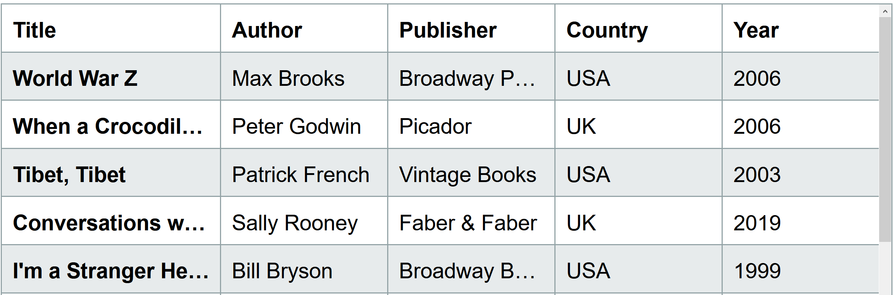
"NVDA's table commands aren't working properly..."
Tools
- Inspect
- AI4Win
- Assistive Tech
- Specs
- Github issues
Inspect the browser's a11y tree:
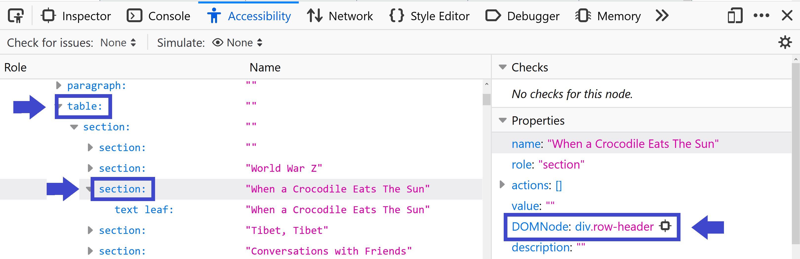
Compare in the spec:
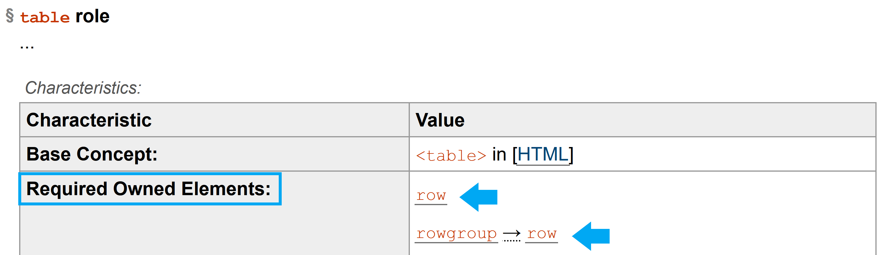
Bug 2: the screen reader cursor is "lost"
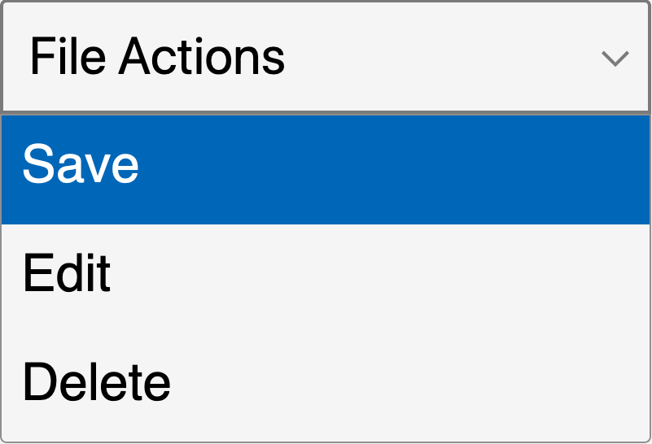
Tools
- Inspect
- AI4Win
- Assistive Tech
- Specs
- Github issues
There are three main causes of screen reader cursor issues
- DOM order not matching visual order
- A modal doesn't hide the background page
- Focus changes
Menu example page
Observing focus changes
document.activeElement
or
document.addEventListener('focusin', () => {
console.log(document.activeElement);
});
Bug 3: the screen reader should say...
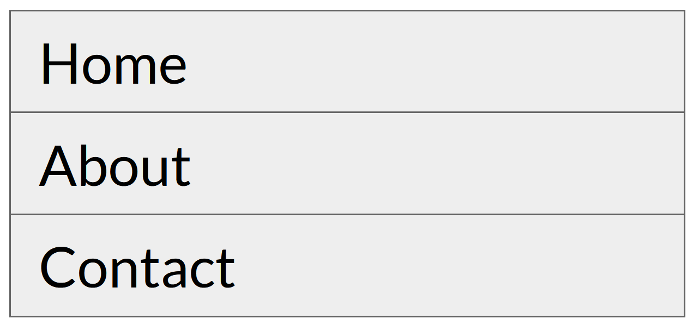
"NVDA isn't reading the index of the link when I tab"
Tools
- Inspect
- AI4Win
- Assistive Tech
- Specs
- Github issues
Do NOT do this:
<li aria-label="Home, 1 of 3">Home</li>
Bonus:

Ask:
- An accessibility SME
- A community (Teams, slack, twitter)
- User studies
This applies to more than screen readers!
Compare against plain HTML for keyboard, pointer, High Contrast Mode, voice control, etc.
Bug 4: live regions
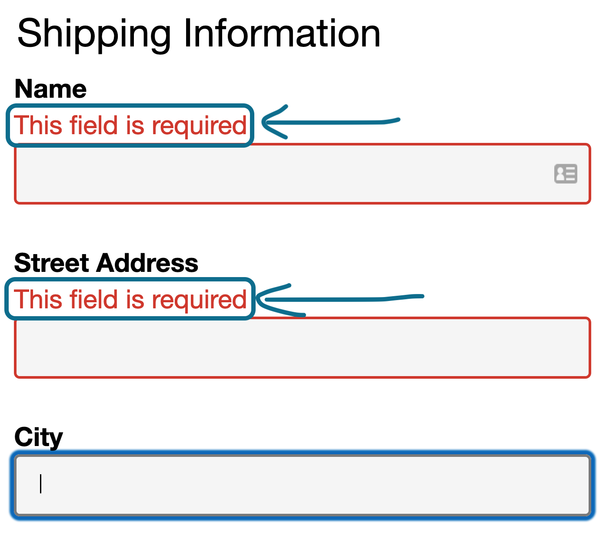
Tools
- Inspect
- AI4Win
- Assistive Tech
- Specs
- Github issues
Debugging the browser itself:
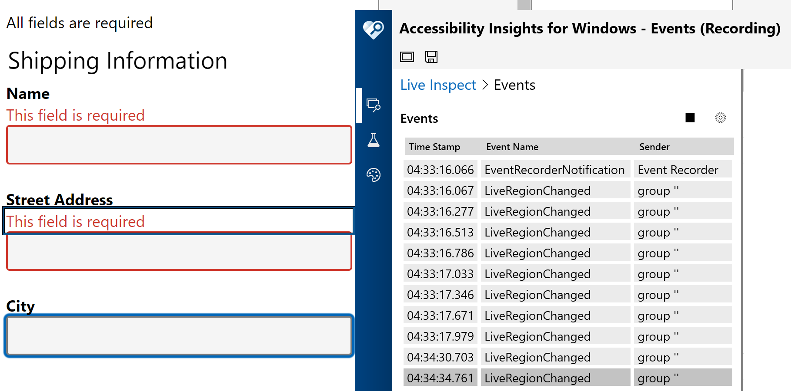
Mutation Observer •
Core AAM spec
•
Example
Using Accessibility Insights for Windows
Find or log issues:
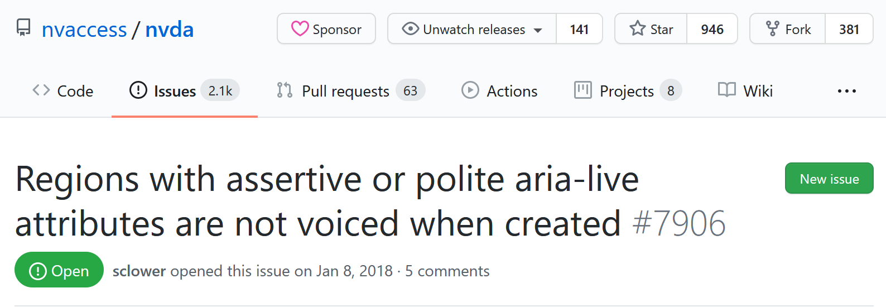
PSA:
always ask an SME before you add a live region
Bug 5: Return of the <table>
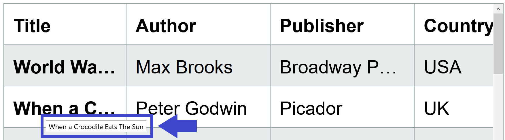
"The truncated text is not accessible via keyboard"
Tools
- Inspect
- Assistive Tech
- Specs
- Github issues
Is this a good design?
Don't let designs get away with begging the question.
A website is not an art gallery.